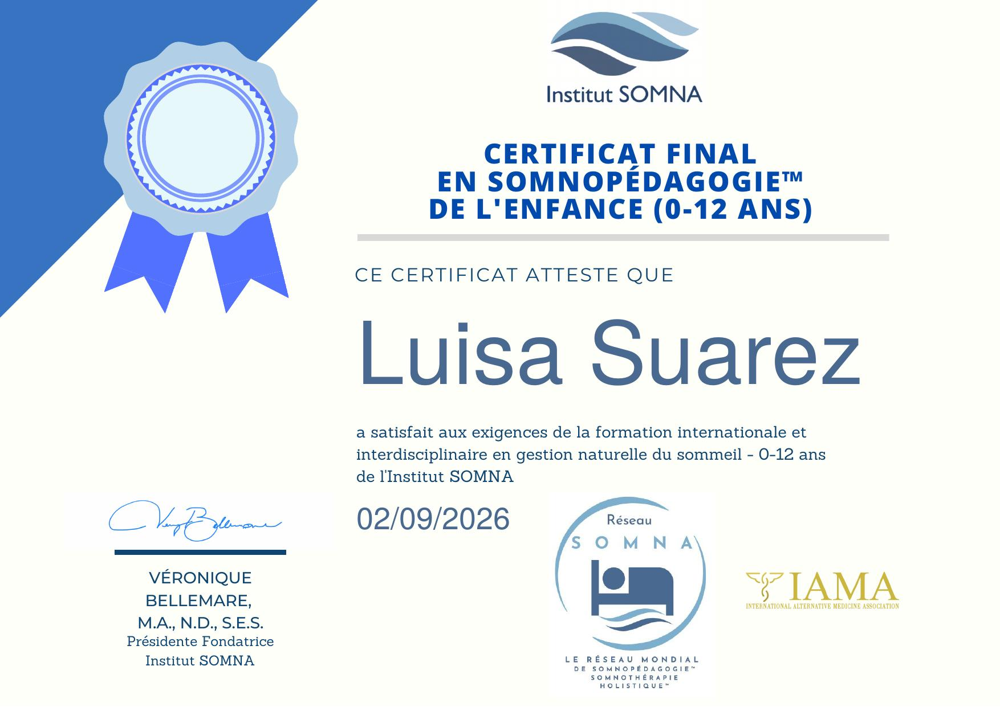

Una mamá, una pasión,
una misión

"Mi aventura con el sueño comenzó el día en que dejé mi carrera para estar presente en cada instante del crecimiento de mi hija — y fue ahí, rodeada de familias extraordinarias, donde nació esta fascinación."
Antes de ser mamá, trabajaba en tecnología. Cuando nació mi hija, mi mundo cambió por completo — y mis prioridades también. Mi carrera dejó de ser lo más importante; lo que importaba era estar plenamente presente para ella en cada instante de su crecimiento. Tuve la maravillosa oportunidad de abrir, en mi propio hogar, una guardería subvencionada para vivir eso plenamente.
Fue ahí, a través de las historias de familias extraordinarias que tuve la fortuna de conocer — y de mi propia vivencia — que el sueño se convirtió en una verdadera fascinación para mí. El sueño de los más pequeños, el de los más grandes, la forma en que trastoca por completo la vida de una familia. Es la base de todo: incluso antes que comer o tomar agua, es el sueño lo que lo cambia todo. Esa fascinación me llevó a formarme en somnopedagogía.
Ese deseo me llevó a certificarme como somnopedagoga y terapeuta integral en el Institut SOMNA — una formación certificante en somnopedagogía™ y somnoterapia integrativa™, reconocida por 13 asociaciones profesionales. Una formación de 275 horas anclada en las neurociencias, la psicología del desarrollo y la medicina integrativa.
Ayudar a tantas familias como sea posible a recuperar el sueño — y, a través de él, a conectar más con sus hijos y con sus propias vidas. Una familia que duerme bien ríe más, se conecta mejor y florece. No estoy aquí para juzgarte, sino para acompañarte — paso a paso — hacia noches más suaves y días más ligeros.

Ampliar el certificadoCertificada por el Institut SOMNA, reconocido por 13 asociaciones profesionales y presente en 13 países. La somnopedagogía™ y la somnoterapia integrativa™ son enfoques basados en la gestión natural del sueño.
Consultar el código ético de la Red SOMNA →